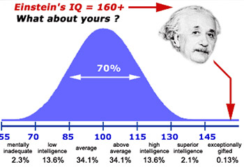

国际标准IQ测试
42785 人测试过
2012-03-26 发布

② 本测试共包括单项选择题合计30题，完成测试约需要15分钟
③ 测试不可重复，做题时请按实际情况作答，系统会基于答题情况自动生成一份专业报告
④ 测试完成后，你可以在个人中心查看随时查看测试报告
开始测试
智商，就是IQ（Intelligence Quotient的简称)，通俗地可以理解为智力，是指数字、空间、逻辑、词汇、创造、记忆等能力，它是德国心理学家施特恩在1912年提出的。智商表示人的聪明程度：智商越高，则表示越聪明。
想检验自己的智商是多少吗？这并不困难，以下就是一份权威的IQ测试题，请在30分钟内完成（30题），之后你就会知道自己的IQ值是多少了。
温馨提示:
① 本测试为付费测试，体验价格为：0.00元② 本测试共包括单项选择题合计30题，完成测试约需要15分钟
③ 测试不可重复，做题时请按实际情况作答，系统会基于答题情况自动生成一份专业报告
④ 测试完成后，你可以在个人中心查看随时查看测试报告
体验价￥0.00原价￥12.00
猜你喜欢：